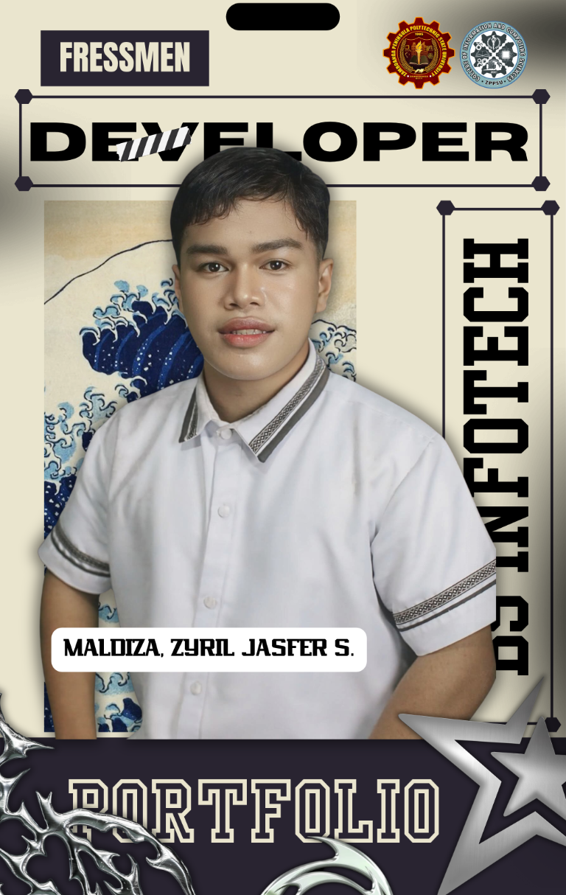

Who am I?
I am Zyril Jasfer Saturinas Maldiza, a BS Information Technology student from Zamboanga Peninsula Polytechnic State University, and I was born in Zamboanga City and I was raise in Siocon Zamboanga del Norte.
Portfolio system · offline
Power on to begin my journey of self-discovery.
Click the button to enter
Understanding the self · E-portfolio
A personal collection of becoming exploring the values, relationships, culture, and experiences that shape who I am.

Choose your path / 01—09
Pick any chapter to discover a different part of my story. You can explore them in any order.
Choose a chapter to explore.
01 / 09
The personal self
I am Zyril Jasfer Saturinas Maldiza, a BS Information Technology student from Zamboanga Peninsula Polytechnic State University, and I was born in Zamboanga City and I was raise in Siocon Zamboanga del Norte.
Kindness · Curiosity · Growth · Family · Integrity
Dancing, Singing, and Making Friends. Hobbies are I am a Dancesport Athlete.
02 / 09
The philosophical self
When someone asks who I am, the easiest answer is my name. But my name was given to me, while the person I am is shaped by what I experience, remember, and learn from. My personal philosophy is that I am defined by my experiences, my choices, and my willingness to keep growing.
This relates to John Locke's idea that the mind at birth is like a blank slate, or tabula rasa, and that our knowledge comes from experience. I see this in life because the lessons we receive from family, school, friends, and even our mistakes influence how we think and act. I was not born already knowing who I would become. I am still learning that through what I go through.
Locke also argued that personal identity depends on consciousness, particularly our ability to recognize past thoughts and actions as our own. My memories connect who I was before with who I am today. This means I should take responsibility for my past, including my mistakes. They are part of my story, but I can learn from them and choose to act better.
Therefore, what defines me is not only my name or physical appearance. It is my awareness of myself, the experiences that shape me, and what I choose to learn from them. I am not a finished person, and every new experience helps me understand who I am and who I want to become.
03 / 09
The sociological self
When I think about who I am today, I realize that I did not become this person on my own. My mom and grandparents have been my teachers in life, and my friends, school, and community have also played a part in shaping how I think, act, and see myself.
My mom and grandparents were the ones who guided me. From them, I learned how to show respect, take responsibility, and know right from wrong. They taught me not only through their words but also through their example. My friends taught me about trust, support, and handling disagreements. School helped me become more disciplined and work with others, while my community showed me the importance of cooperation and caring for people outside my own home.
I can relate this to Charles Horton Cooley's "looking-glass self." It explains that we form a view of ourselves based on how we imagine others see and judge us. When I feel that my mom and grandparents are proud of me, I become more confident. When I think they are disappointed, I reflect on my actions and try to do better. However, what I imagine others think is not always true, so it should not completely decide who I am.
My interactions with other people have shaped my values, behavior, and confidence. I carry the lessons of my mom and grandparents with me, but I also make my own choices. They helped build the foundation of who I am, and it is my responsibility to continue growing from it.
04 / 09
The anthropological self
My cultural identity is shaped by a family with two faiths. My mom is Christian, and my dad is Muslim. Because of this, I understand that people can have different beliefs and practices and still be connected as a family.
Christianity and Islam are both part of my family background. Each has its own teachings, traditions, and ways of worship. Christians celebrate occasions such as Christmas and Easter, while Muslims observe Ramadan and celebrate Eid. Being close to these two backgrounds reminds me that differences should be understood and respected, not used to judge others.
My culture has influenced my values, especially respect, open-mindedness, and understanding. It has taught me to listen before making judgments and to be careful about the beliefs of others. I also see that faith can encourage people to pray, be kind, help those in need, and strive to do what is right.
It has also influenced how I understand myself. My identity does not have to be explained in a very simple way. I come from a family where two religious backgrounds meet, and this is part of my story. As I grow, I continue to learn about my beliefs and the person I want to be, while giving respect to both sides of my family.
05 / 09
The psychological self
INNER SELF / REFLECTION
I have discovered that I am not really quiet when I am with people I know. I can be confident in expressing myself, but I am not totally self-confident. There are still times when I doubt myself.
One of my strengths is that I can show confidence towards people, especially when I feel comfortable with them. My weakness is that I am scared of being mistreated and judged. This fear reminds me that even if I look confident, I can still feel unsure inside.
My friends are important to me because I am comfortable sharing my challenges with them. Being able to open up helps me express what I feel instead of keeping everything to myself. It also shows me the value of having people I can trust.
Through this reflection, I understand that I am still building my confidence. I do not need to be fearless to grow. I can take small steps, learn to value myself, and remember that other people's judgment does not decide my whole worth. I am still discovering who I am, and that is part of my journey.
06 / 09
The physical self
BODY / SELF-ACCEPTANCE
My physical self is part of my identity, but it is not the whole of who I am. Over time, I have become more aware of my appearance and of how the opinions of others can affect the way I see myself. There are times when I feel comfortable with how I look, and times when I feel unsure or compare myself with others.
I am learning that people have different faces, bodies, skin tones, and features, and that no one has to look exactly like another person to have worth. What we see on social media can also be edited or show only a person's best angles, so it is not always fair to compare myself with it.
Self-care is one way I can show respect for myself. This includes keeping myself clean, eating properly, getting enough rest, staying active, and wearing clothes that make me comfortable. Self-care is not only about looking good. It is also about looking after my health and feelings.
Body positivity and self-acceptance do not mean that I must love everything about my appearance every day. For me, they mean treating myself with kindness even when I feel insecure. My perception of my physical self is still changing. I am learning to appreciate what my body allows me to do and to remember that my value is greater than my appearance.
07 / 09
The digital self
ONLINE / OFFLINE
Social media is one of the places where I can express myself, but what people see there is only a part of who I am. Online, I can choose which pictures, thoughts, and moments to share. I can also edit or delete things before others see them. In real life, my emotions and reactions are not always that easy to control.
My online identity does not completely represent me. A happy post does not mean that I am always happy, and a confident picture does not mean that I never feel insecure. There are experiences, struggles, and parts of my personality that I may only share with people I trust. Still, what I post, like, and comment can reflect my interests, values, and behavior.
Being a responsible digital citizen means treating people with respect even when I am behind a screen. I should think before posting or commenting, check information before sharing it, protect my personal details, and ask permission before posting private things about others. I should also avoid joining cyberbullying or spreading rumors.
I have realized that my online self and real self are connected, even if they are not exactly the same. I do not need to show everything online to be genuine. What matters is that I stay honest, responsible, and respectful, whether I am talking to someone face to face or through a screen.
08 / 09
My future self
In the next five to ten years, I aspire to become a confident, responsible, and respectful person. I want to finish my studies, build useful skills, and find work that gives me purpose and helps me support my family. I also want to take better care of myself and not be easily held back by the fear of being judged. I hope to keep a strong bond with my family, honor the lessons of my grandparents, and build honest friendships. To achieve these goals, I will study consistently, learn new skills, practice speaking up, and talk to someone I trust when things are hard. I know that change will not happen overnight, but I will take it one step at a time to become the person I want to be.
09 / 09
Final reflection
The most important realization I have gained in this course is that I am more than my name, appearance, or what other people think of me. I am shaped by my experiences, relationships, culture, and choices. I have also realized that I do not need to be perfect or fully confident to have worth. I am still growing, and I am allowed to discover myself one step at a time.
The topic that influenced me the most is the Psychological Self because it made me look at my emotions, strengths, and weaknesses. I learned that I can be confident, especially with people I know, but I am not totally self-confident. I am also scared of being mistreated and judged. Understanding this helped me see that confidence and fear can exist in the same person.
At the beginning of the semester, I did not think deeply about the different parts of my identity. Now, I understand that who I am is connected to many things. My mom and grandparents taught me lessons that I carry with me. Having a Christian mom and a Muslim dad also reminds me to respect different beliefs. My friends, school, community, and online experiences are part of my story too.
One personal challenge that has helped me become more self-aware is my fear of judgment. It sometimes makes me doubt myself, but it also helps me understand what I need to work on. I am comfortable sharing my challenges with my friends, and this shows me that I do not have to keep everything to myself. I am learning that other people's opinions should not completely decide how I see myself.
In the future, I will use what I learned by thinking carefully before making decisions and asking whether my choices match my values. I will practice speaking up, take care of my physical and emotional health, and be responsible both online and in real life. I will also treat others with respect because everyone has experiences that shape who they are.
My journey toward self-understanding does not end with this course. There are still things I need to learn about myself. What matters is that I stay honest, accept my weaknesses, develop my strengths, and keep working toward becoming a better person.